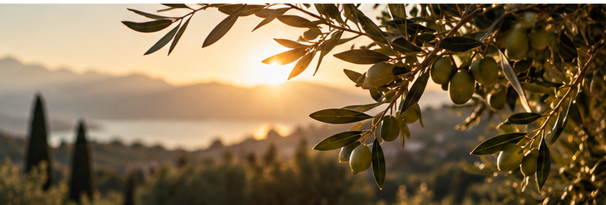

Портфолио · контент · визуальные истории
Слова.
Образы.
Идеи.
Здесь собраны разные направления моей работы — от коммерческих текстов и цифрового контента до нейрофотографии и личных творческих проектов.
Выберите направление
Рабочее портфолио
Каждое направление — отдельная история со своими задачами, примерами и визуальным языком. Выберите то, что вам интересно.

01 / СЛОВО
Тексты для коммерции
Статьи, описания, публикации, рерайт и редактура для брендов и цифровых площадок.
Смотреть направление ↗

02 / ПУБЛИКАЦИИ
Медиа-контент
Визуальные материалы, оформление публикаций, обложки, баннеры и контент для сообществ.
Смотреть направление ↗

03 / AI-ПОРТРЕТ
Нейрофотосессии
Образы и фотосерии с помощью генеративных инструментов — с вниманием к сходству и деталям.
Смотреть направление ↗

04 / КОММЕРЧЕСКИЙ ВИЗУАЛ
Картинки для товаров
Товарные изображения, AI-модели, карточки и визуальные концепции для маркетплейсов.
Смотреть направление ↗

Мне интересно работать на пересечении текста, изображения и цифровых инструментов — и искать для каждой задачи точную форму.
Связаться со мной ↗